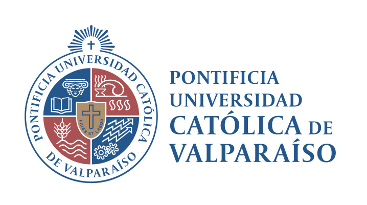
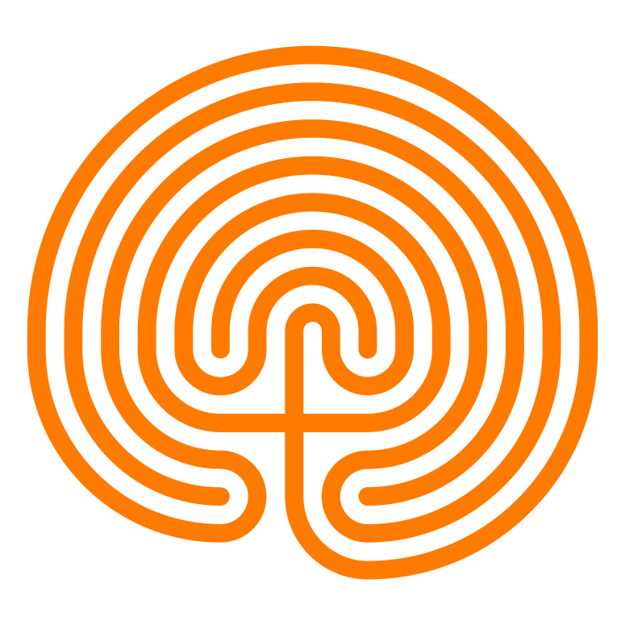
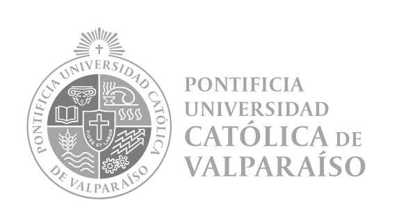

Acerca
Este núcleo multidisciplinario de investigación se plantea como espacio de trabajo la relación del ser humano con el medioambiente construído. Desde una mirada crítica e inclusiva examinamos los productos, procesos, espacios y servicios para imaginar y proponer formas más inclusivas y accesibles que aseguren la mayor participación posible. Nuestro ámbito de trabajo engloba políticas públicas, urbanismo, arquitectura y diseño como todo el “entorno construido” y su relación con las ciencias aplicadas de la ingeniería, educación, salud y ciencias jurídicas.
Nuestro núcleo desarrolla proyectos de arquitectura, diseño, ingeniería, educación y salud insertos en modelos de aplicación que ofrezcan solución a problemáticas actuales de la sociedad tales como modelos con sostenibilidad social y participación de grupos históricamente excluidos.
Nuestro foco en accesibilidad apunta al desarrollo de criterios, políticas y marcos conceptuales para el desarrollo de entornos más humanos e inclusivos, en resonancia a los desafíos que nos plantea la transición económica del postcapitalismo, las nuevas economías con nuevos modelos de valor para el trabajo de las personas y su proyección de bienestar a futuro. Trabajamos a partir de los nuevos paradigmas tecnológicos que nos plantean las tecnologías ubicuas, distribuidas e inteligentes en la reimaginación de los futuros posibles.
Este núcleo confía en las donaciones de la comunidad para mantener los diversos proyectos como iniciativas públicas de código abierto.
 Accesibilidad & Inclusión 2023 ~ Promoviendo espacios inclusivos 